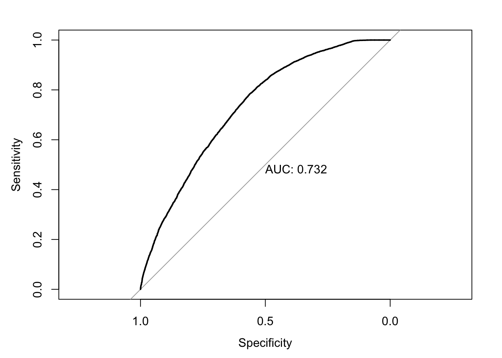

Successful completion of residential alcohol treatment
Abby Stevens
2020-11-25
Last updated: 2020-12-18
Checks: 6 1
Knit directory: teds_ml/
This reproducible R Markdown analysis was created with workflowr (version 1.6.2). The Checks tab describes the reproducibility checks that were applied when the results were created. The Past versions tab lists the development history.
The R Markdown is untracked by Git. To know which version of the R Markdown file created these results, you’ll want to first commit it to the Git repo. If you’re still working on the analysis, you can ignore this warning. When you’re finished, you can run wflow_publish to commit the R Markdown file and build the HTML.
Great job! The global environment was empty. Objects defined in the global environment can affect the analysis in your R Markdown file in unknown ways. For reproduciblity it’s best to always run the code in an empty environment.
The command set.seed(20201124) was run prior to running the code in the R Markdown file. Setting a seed ensures that any results that rely on randomness, e.g. subsampling or permutations, are reproducible.
Great job! Recording the operating system, R version, and package versions is critical for reproducibility.
Nice! There were no cached chunks for this analysis, so you can be confident that you successfully produced the results during this run.
Great job! Using relative paths to the files within your workflowr project makes it easier to run your code on other machines.
Great! You are using Git for version control. Tracking code development and connecting the code version to the results is critical for reproducibility.
The results in this page were generated with repository version be9f492. See the Past versions tab to see a history of the changes made to the R Markdown and HTML files.
Note that you need to be careful to ensure that all relevant files for the analysis have been committed to Git prior to generating the results (you can use wflow_publish or wflow_git_commit). workflowr only checks the R Markdown file, but you know if there are other scripts or data files that it depends on. Below is the status of the Git repository when the results were generated:
Ignored files:
Ignored: .DS_Store
Ignored: .Rhistory
Ignored: analysis/.DS_Store
Untracked files:
Untracked: analysis/alc_completion_2017.Rmd
Untracked: analysis/cocaine_completion_2017.Rmd
Untracked: analysis/meth_completion_2017.Rmd
Untracked: analysis/mj_completion_2017.Rmd
Untracked: analysis/opioid_completion_2017_medicaid.Rmd
Untracked: analysis/tx_completion_2017.Rmd
Untracked: analysis/tx_completion_2017_lg.Rmd
Untracked: data/.ipynb_checkpoints/
Untracked: data/TEDS-D-2007-DS0001-data-excel.tsv
Untracked: data/clean_data.ipynb
Untracked: data/expansion-status-interactive-map_10.1.20-2.csv
Untracked: data/medicaid_expansion.csv
Untracked: data/teds4aequitas.csv
Untracked: data/tedsa_puf_2017.csv
Untracked: data/tedsd_puf_2017.csv
Untracked: output/teds_predictions.csv
Untracked: tx_completion_2017.Rmd
Unstaged changes:
Deleted: analysis/feature_exploration.Rmd
Modified: analysis/index.Rmd
Modified: analysis/opioid_completion_2017.Rmd
Note that any generated files, e.g. HTML, png, CSS, etc., are not included in this status report because it is ok for generated content to have uncommitted changes.
There are no past versions. Publish this analysis with wflow_publish() to start tracking its development.
Experimental setting
Refer to the codebook for variable descriptions.
Response: Successful completion of short or long-term marijuana treatment Features: See myvars defined below.
mydata <- read.csv("data/tedsd_puf_2017.csv")
medexp <- read.csv("data/medicaid_expansion.csv")
# merge
mydata <- merge(mydata, medexp, by='STFIPS')
# filter
mydata <- mydata %>% filter(SUB1 == 2, SERVICES %in% c(4,5)) # marijuana
mydata$COMPLETED = ifelse(mydata$REASON==1, 1, 0) #create response variable
myvars <- c("ROUTE1", "FREQ1", "FRSTUSE1", "IDU","COKEFLG", "BENZFLG", "PSYPROB", "HLTHINS", "PRIMPAY", "AGE", "GENDER", "LIVARAG", "DIVISION", "METHUSE", "NOPRIOR", "EDUC", "HERFLG","RACE","MARSTAT","PRIMINC","ETHNIC","ARRESTS_D", "SUB2", "MEDEXP")
response = "COMPLETED"
teds <- as.data.frame(lapply(mydata[myvars], factor))
teds[, response] = mydata[, response]Exploratory analysis
First, we check to see if our classes are balanced.
table(teds[,response])
0 1
40088 55121 In this case it looks ok! Next, we can vizualize some (or all) of the relationships between the features and the response. Here we just look at 3 of the variables so it’s less chaotic.
sbs_response_plots(teds, c("DIVISION", "HLTHINS", "RACE"), response)
Next, split the data into training and testing sets, using 3/4 of the data for training and holding out 1/4 for testing.
set.seed(123) #for replicability
teds_split = initial_split(teds, prop=3/4)
# extract training and testing sets
teds_train <- training(teds_split)
teds_test <- testing(teds_split)Logistic regression
Now, we fit a logistic regression model on our training data. We display the coefficients as well as the predictive performance on the test data.
fm <- as.formula(paste(response, "~ ."))
lg = glm(fm, family=binomial, data=teds_train)
summary(lg)
Call:
glm(formula = fm, family = binomial, data = teds_train)
Deviance Residuals:
Min 1Q Median 3Q Max
-2.4882 -1.0441 0.6664 0.8938 3.0197
Coefficients:
Estimate Std. Error z value Pr(>|z|)
(Intercept) -2.0628265 0.7005084 -2.945 0.003232 **
ROUTE11 0.0149903 0.1188833 0.126 0.899659
ROUTE12 -0.2535309 0.2512304 -1.009 0.312899
ROUTE13 1.0874668 0.2542635 4.277 1.89e-05 ***
ROUTE14 -0.0211616 0.3273175 -0.065 0.948451
ROUTE15 -0.4712682 0.4042410 -1.166 0.243691
FREQ11 -0.1325393 0.0393812 -3.366 0.000764 ***
FREQ12 -0.0511184 0.0354341 -1.443 0.149124
FREQ13 -0.1125397 0.0336068 -3.349 0.000812 ***
FRSTUSE11 -0.4021130 0.1010961 -3.978 6.96e-05 ***
FRSTUSE12 -0.3024609 0.0992751 -3.047 0.002314 **
FRSTUSE13 -0.2801286 0.0992056 -2.824 0.004747 **
FRSTUSE14 -0.2502941 0.1007028 -2.485 0.012938 *
FRSTUSE15 -0.2583661 0.1047720 -2.466 0.013664 *
FRSTUSE16 -0.2655039 0.1150526 -2.308 0.021017 *
FRSTUSE17 -0.3294628 0.1116592 -2.951 0.003171 **
IDU0 -0.0689713 0.0305319 -2.259 0.023884 *
IDU1 -0.1769383 0.0464837 -3.806 0.000141 ***
COKEFLG1 -0.0174231 0.0482194 -0.361 0.717853
BENZFLG1 0.0169289 0.0744759 0.227 0.820185
PSYPROB1 -0.7443267 0.0388070 -19.180 < 2e-16 ***
PSYPROB2 -0.6670055 0.0382530 -17.437 < 2e-16 ***
HLTHINS1 0.3409820 0.0722846 4.717 2.39e-06 ***
HLTHINS2 -0.3284289 0.0427850 -7.676 1.64e-14 ***
HLTHINS3 -0.0961427 0.0654004 -1.470 0.141544
HLTHINS4 -0.1531667 0.0466771 -3.281 0.001033 **
PRIMPAY1 -0.3290459 0.0787475 -4.178 2.93e-05 ***
PRIMPAY2 0.1608681 0.0786858 2.044 0.040911 *
PRIMPAY3 0.1036419 0.1889325 0.549 0.583304
PRIMPAY4 -0.3963271 0.0393639 -10.068 < 2e-16 ***
PRIMPAY5 -0.2670510 0.0422106 -6.327 2.51e-10 ***
PRIMPAY6 -0.9608750 0.1076104 -8.929 < 2e-16 ***
PRIMPAY7 -0.4421418 0.0685994 -6.445 1.15e-10 ***
AGE2 0.0910656 0.3264483 0.279 0.780276
AGE3 -0.3397295 0.3213140 -1.057 0.290369
AGE4 -0.2246077 0.3150537 -0.713 0.475896
AGE5 -0.1861208 0.3138414 -0.593 0.553154
AGE6 -0.1300444 0.3137747 -0.414 0.678543
AGE7 -0.1188669 0.3138780 -0.379 0.704908
AGE8 -0.0832349 0.3140875 -0.265 0.791005
AGE9 -0.0508898 0.3139609 -0.162 0.871235
AGE10 0.0092565 0.3140013 0.029 0.976482
AGE11 0.0933774 0.3141290 0.297 0.766269
AGE12 -0.0629464 0.3201794 -0.197 0.844143
GENDER1 1.4464490 0.5933441 2.438 0.014777 *
GENDER2 1.4143587 0.5934495 2.383 0.017159 *
LIVARAG1 0.2971863 0.0770565 3.857 0.000115 ***
LIVARAG2 0.2548338 0.0774322 3.291 0.000998 ***
LIVARAG3 0.4346539 0.0761457 5.708 1.14e-08 ***
DIVISION2 -0.0085476 0.0452370 -0.189 0.850131
DIVISION3 -1.1830980 0.0463270 -25.538 < 2e-16 ***
DIVISION4 -0.7237174 0.0485938 -14.893 < 2e-16 ***
DIVISION5 -1.1184273 0.0487644 -22.935 < 2e-16 ***
DIVISION6 -0.8088577 0.0610602 -13.247 < 2e-16 ***
DIVISION7 -0.2576851 0.0613591 -4.200 2.67e-05 ***
DIVISION8 0.1068601 0.0582116 1.836 0.066399 .
DIVISION9 -0.2478699 0.0581953 -4.259 2.05e-05 ***
METHUSE1 -0.1101376 0.0646294 -1.704 0.088355 .
METHUSE2 -0.0885410 0.0435905 -2.031 0.042235 *
NOPRIOR0 -0.8210617 0.0697376 -11.774 < 2e-16 ***
NOPRIOR1 -0.8367932 0.0685663 -12.204 < 2e-16 ***
EDUC1 -0.5182191 0.0838425 -6.181 6.38e-10 ***
EDUC2 -0.3554040 0.0765513 -4.643 3.44e-06 ***
EDUC3 -0.2614754 0.0746865 -3.501 0.000464 ***
EDUC4 -0.2185499 0.0758156 -2.883 0.003943 **
EDUC5 -0.1945182 0.0789381 -2.464 0.013732 *
HERFLG1 0.0801952 0.0707335 1.134 0.256893
RACE1 -0.2059673 0.1648535 -1.249 0.211520
RACE2 -0.0030630 0.1022439 -0.030 0.976101
RACE3 2.1169564 1.7149540 1.234 0.217050
RACE4 -0.0391569 0.0909978 -0.430 0.666973
RACE5 0.1055058 0.0883888 1.194 0.232613
RACE6 0.1773540 0.1442125 1.230 0.218768
RACE7 0.0134253 0.0936046 0.143 0.885954
RACE8 -0.0907469 0.0999137 -0.908 0.363745
RACE9 -0.2651592 0.1874638 -1.414 0.157228
MARSTAT1 -0.1125370 0.0504111 -2.232 0.025590 *
MARSTAT2 -0.0665011 0.0554545 -1.199 0.230449
MARSTAT3 -0.2049102 0.0601394 -3.407 0.000656 ***
MARSTAT4 -0.1431133 0.0527115 -2.715 0.006627 **
PRIMINC1 0.6957623 0.0456834 15.230 < 2e-16 ***
PRIMINC2 0.1129879 0.0521274 2.168 0.030194 *
PRIMINC3 0.0514214 0.0550404 0.934 0.350176
PRIMINC4 0.2163781 0.0459082 4.713 2.44e-06 ***
PRIMINC5 0.2146170 0.0411573 5.215 1.84e-07 ***
ETHNIC1 -0.0149182 0.0762723 -0.196 0.844930
ETHNIC2 0.1216274 0.0701486 1.734 0.082944 .
ETHNIC3 0.2451629 0.0741812 3.305 0.000950 ***
ETHNIC4 0.0231188 0.0538068 0.430 0.667441
ETHNIC5 0.0006256 0.0822507 0.008 0.993932
ARRESTS_D0 2.9533211 0.0659392 44.789 < 2e-16 ***
ARRESTS_D1 2.3220331 0.0822303 28.238 < 2e-16 ***
ARRESTS_D2 2.5527857 0.1199659 21.279 < 2e-16 ***
SUB21 0.2756623 0.0598024 4.610 4.04e-06 ***
SUB23 0.0753528 0.0767671 0.982 0.326308
SUB24 0.0735985 0.0621592 1.184 0.236400
SUB25 -0.0147872 0.0975385 -0.152 0.879499
SUB26 0.1724842 0.3171163 0.544 0.586500
SUB27 0.0608984 0.0739895 0.823 0.410469
SUB28 0.5411502 0.1781505 3.038 0.002385 **
SUB29 -0.1876624 0.2217705 -0.846 0.397441
SUB210 0.0042178 0.0683359 0.062 0.950784
SUB211 -0.1609222 0.1401307 -1.148 0.250815
SUB212 -0.1065874 0.1747457 -0.610 0.541890
SUB213 0.0732900 0.1072714 0.683 0.494468
SUB214 0.0469080 0.5579719 0.084 0.933002
SUB215 -0.1372802 0.4107708 -0.334 0.738228
SUB216 -0.0662871 0.1750089 -0.379 0.704863
SUB217 -0.1331313 0.2994078 -0.445 0.656574
SUB218 0.2395931 0.2766430 0.866 0.386450
SUB219 -0.0545036 0.1063389 -0.513 0.608269
MEDEXP1 0.3088701 0.0342821 9.010 < 2e-16 ***
---
Signif. codes: 0 '***' 0.001 '**' 0.01 '*' 0.05 '.' 0.1 ' ' 1
(Dispersion parameter for binomial family taken to be 1)
Null deviance: 97176 on 71406 degrees of freedom
Residual deviance: 82561 on 71295 degrees of freedom
AIC: 82785
Number of Fisher Scoring iterations: 5test_prob = predict(lg, newdata = teds_test, type = "response")
test_roc = roc(teds_test$COMPLETED ~ test_prob, plot = TRUE, print.auc = TRUE)
For this experiment, our baseline AUC using logistic regression is 0.69.
Random forest
Next, we fit a random forest model to the same training data. We are just using the default parameterizations here; previous experimentation showed that there wasn’t much variance across parameters, so I’m comfortable doing this for these experiments.
rf <- teds_rf(teds, myvars, response)The rf_cv object returned includes 4 things: the model specification, the test performance, and the test predictions. First we look at the test performance:
rf$test_performance# A tibble: 2 x 3
.metric .estimator .estimate
<chr> <chr> <dbl>
1 accuracy binary 0.728
2 roc_auc binary 0.776In this case, we see that the AUC=0.742 on the test set, an improvement over the logistic regression. We can use the test predictions to generate the ROC curve:
# plot roc cruve
autoplot(roc_curve(rf$test_predictions, !!response, .pred_0))Finally, we compute and visualize the feature importances.
Feature importance
teds[,response] = as.factor(teds[[response]])
final_model <- fit(rf$model, teds)
final_model %>%
pull_workflow_fit() %>%
vip()
sessionInfo()R version 4.0.0 (2020-04-24)
Platform: x86_64-apple-darwin17.0 (64-bit)
Running under: macOS 10.16
Matrix products: default
BLAS: /Library/Frameworks/R.framework/Versions/4.0/Resources/lib/libRblas.dylib
LAPACK: /Library/Frameworks/R.framework/Versions/4.0/Resources/lib/libRlapack.dylib
locale:
[1] en_US.UTF-8/en_US.UTF-8/en_US.UTF-8/C/en_US.UTF-8/en_US.UTF-8
attached base packages:
[1] stats graphics grDevices utils datasets methods base
other attached packages:
[1] gridExtra_2.3 reshape2_1.4.4 vip_0.2.2 pROC_1.16.2
[5] yardstick_0.0.7 workflows_0.2.1 tune_0.1.1 rsample_0.0.8
[9] recipes_0.1.14 parsnip_0.1.4 modeldata_0.1.0 infer_0.5.3
[13] dials_0.0.9 scales_1.1.1 broom_0.7.2 tidymodels_0.1.1
[17] forcats_0.5.0 stringr_1.4.0 dplyr_1.0.2 purrr_0.3.4
[21] readr_1.3.1 tidyr_1.1.2 tibble_3.0.4 ggplot2_3.3.2
[25] tidyverse_1.3.0 workflowr_1.6.2
loaded via a namespace (and not attached):
[1] colorspace_1.4-1 ellipsis_0.3.1 class_7.3-16 rprojroot_1.3-2
[5] fs_1.4.1 rstudioapi_0.11 listenv_0.8.0 furrr_0.2.1
[9] farver_2.0.3 prodlim_2019.11.13 fansi_0.4.1 lubridate_1.7.8
[13] ranger_0.12.1 xml2_1.3.2 codetools_0.2-16 splines_4.0.0
[17] knitr_1.28 jsonlite_1.6.1 dbplyr_1.4.3 compiler_4.0.0
[21] httr_1.4.1 backports_1.1.8 assertthat_0.2.1 Matrix_1.2-18
[25] cli_2.0.2 later_1.1.0.1 htmltools_0.4.0 tools_4.0.0
[29] gtable_0.3.0 glue_1.4.1 Rcpp_1.0.4.6 cellranger_1.1.0
[33] DiceDesign_1.8-1 vctrs_0.3.4 iterators_1.0.12 timeDate_3043.102
[37] gower_0.2.1 xfun_0.13 globals_0.13.1 rvest_0.3.5
[41] lifecycle_0.2.0 future_1.19.1 MASS_7.3-51.5 ipred_0.9-9
[45] hms_0.5.3 promises_1.1.1 parallel_4.0.0 yaml_2.2.1
[49] rpart_4.1-15 stringi_1.4.6 foreach_1.5.0 lhs_1.0.2
[53] hardhat_0.1.4 lava_1.6.7 rlang_0.4.8 pkgconfig_2.0.3
[57] evaluate_0.14 lattice_0.20-41 labeling_0.3 tidyselect_1.1.0
[61] plyr_1.8.6 magrittr_1.5 R6_2.4.1 generics_0.0.2
[65] DBI_1.1.0 pillar_1.4.4 haven_2.2.0 withr_2.2.0
[69] survival_3.1-12 nnet_7.3-14 modelr_0.1.8 crayon_1.3.4
[73] utf8_1.1.4 rmarkdown_2.1 grid_4.0.0 readxl_1.3.1
[77] git2r_0.27.1 reprex_0.3.0 digest_0.6.25 httpuv_1.5.4
[81] GPfit_1.0-8 munsell_0.5.0